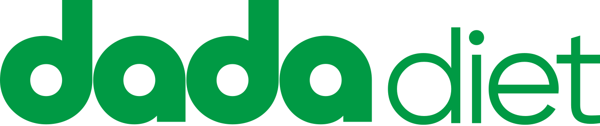

7 Kasım 2026Mobil uygulama: 8 karar için öneri
Yasin Bey'in onayına. Ölçüt: Dada Gastro kanonu ve Dada Diet web ile tutarlılık.
Karara bağlandı: Su ekleme "1 su bardağı (200 ml)" olarak kalıyor, su takibi bardak görünümünde kalıyor. Web'deki 200 ml bardak ölçüsüyle aynı.
Arayüz ve içerik
- K3Yan menü yönüSağdan açılmaya devam etsinGastro mobilde menü sağdan açılıyor, Diet web'de de öyle. Şartname "sol" diyor ama aynı yerde "Gastro ile %100 uyumlu" diyor.
- K4Tabak Kur aracıWeb'deki hesabın aynısı mobile alınsınWeb'de oran ve puanlama hazır. Ayrı formül kurulursa aynı tabak iki yerde farklı puan alır.
- K5541 besin, 58 test, BMHMenüde 541 ve 58 yazsın, testler web'deki içerikten gelsinSayılar canlı sitede doğru. Prototipte örnek olarak 309 besin var. BMH, web'deki hesaplayıcıyla aynı formülden çıksın.
- K6Gastro ve Fit eşitlemeHesabım altında "Bağlı uygulamalar" olsun; yalnız profil ve hedef eşitlensinWeb'deki "Bağlı uygulamalar" bölümü bugün yalnız cihazları kapsıyor. Gastro ve Fit aynı bölüme eklenirse iki taraf tutarlı olur; sağlık verisi kapsam dışında kalır.
- K7Öğün onayı"Onay" değil, "Diyetisyen gördü" ve not olsunWeb'de öğün onayı yok. Tek tek onay diyetisyene yük getirir ve tıbbi onay gibi anlaşılabilir.
Sağlık ve hukuk
- K8Misafirde kalori hedefiSabit hedef gösterilmesin; hedef kısa hesaplamadan sonra çıksınBoy, kilo ve yaş bilinmeden verilen hedef kişiye uygun olmayabilir. Web'de hedef hesaplayıcıdan geliyor.
- K9Misafirde oruçOruç başlamadan tek ekranlık sağlık sorusu sorulsunGebelik, emzirme ve yeme bozukluğu engeli şu an yalnız üyelikte çalışıyor. Misafir bu kontrolü atlıyor.
- K10KVKK ve veri aktarımıMisafir verisi cihazda kalsın, üyelikte aktarmadan önce açık rıza alınsınWeb'in metni sağlık verisi için açık rıza diyor. Rıza verilmezse veri cihazda kalır, hesaba geçmez. Nihai metni hukuk onaylamalı.
Hepsi uygunsa "uygun" yazmanız yeterli. Farklı düşündüğünüz maddenin yalnız numarasını iletin.